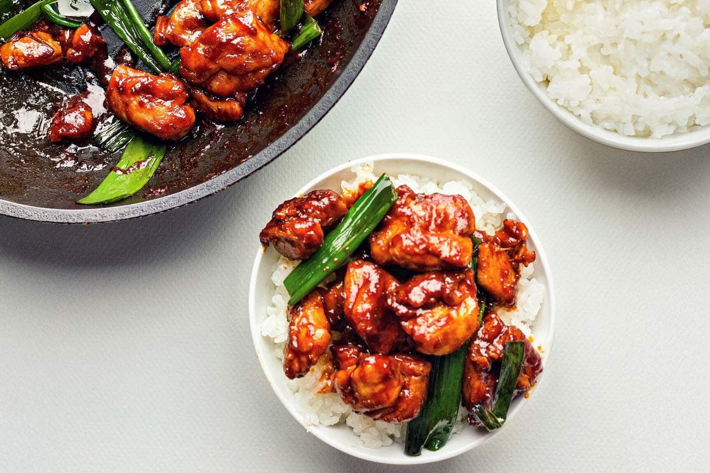
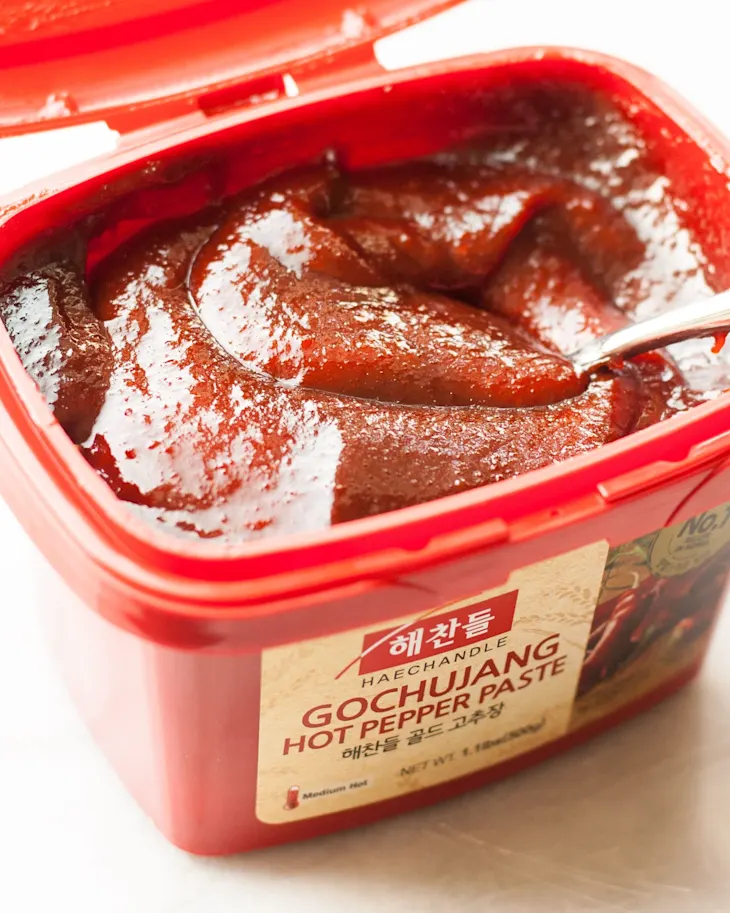

Gochujang Chicken

My Favorite Korean Style Chicken
Gochujang chicken is one of my favorite recipes. It is simple, straightforward, versatile, and most importantly it is delicious. For fans of Korean style spice, the gochujang flavor is fantastic. Different levels of spicy-ness are available and you can also adjust the recipe according to your taste. This dish can be as simple or as complex as you'd like. It can be a smaller side or it can easily become the main course. Try this simple recipe for your first attempt, then make it your own as you add your favorite ingredients.
Ingredients
- 2 large boneless skinless chicken thighs
- 1 teaspoon minced garlic
- 1 teaspoon minced ginger
- 1 teaspoon sesame oil
- 1 teaspoon sugar
- 2 tablespoons soy sauce
- 2 tablespoons gochujang
Optional Ingredients
- 2 tablespoons chopped scallion
- 1 white onion sliced
- Sesame seeds
- Cooked white rice

Prep

- Combine minced garlic, minced ginger, sugar, soy sauce, sesame oil, and gochujang in a bowl. Stir well and set aside.
- Gochujang can be adjusted to your preference. Choose your preferred spice level and add more or less. I personally add about 3-4 tablespoons for extra spice and flavor, though that is quite spicy for me as well.
- If adding onion and scallion, cut onion into slices and chop scallion into small pieces.
- Pat dry chicken thighs and slice into bite sized chunks.
Instructions

- Heat up some cooking oil over medium-high heat.
- Add chicken pieces in one layer and cook for about 3-5 minutes until well browned on one side.
- Reduce heat to about medium, then flip the chicken pieces. Cook for another 2 minutes.
- Pour prepared marinade over the chicken.
- If onions and scallion were prepared, add them now.
- Continue cooking for about 2 more minutes, stirring and making sure all ingredients are evenly coated in the marinade.
- Check if chicken is thoroughly cooked by slicing into it.
- Transfer onto serving dish and sprinkle desired amount of sesame seeds on top.
- Serve with steamed white rice.
Tips
If you like a bit sweeter, you can add more sugar. If you like spicier heat, add more gochujang (I like to add a lot). If you like a fuller, deeper, savory flavor, add more sesame oil. Finally, I would recommend adding your favorite vegetables. Some suggestions: cabbage, leek, bok choy, bean sprouts, or anything with a good crunch for some texture.